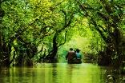

<p style="text-align: justify;">Ratargul Swamp Forest is a freshwater swamp forest located in Gowainghat, Sylhet. It is the only swamp forest located in Bangladesh and one of the few freshwater swamp forest in the world. The forest is naturally conserved under the Department of Forestry, Govt. of Bangladesh.</p>
